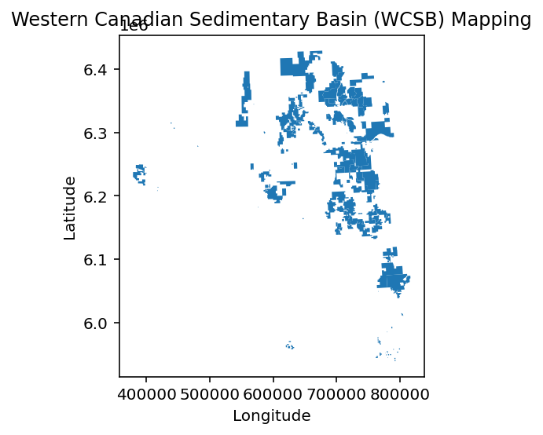
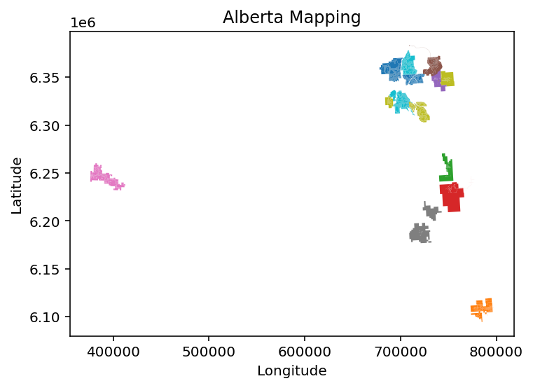
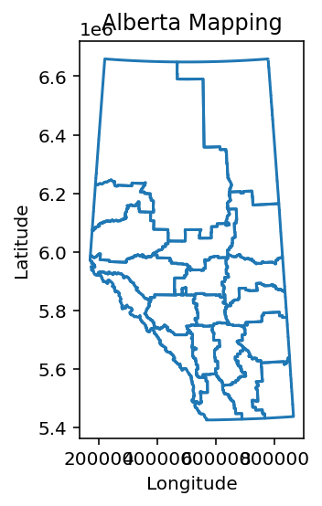
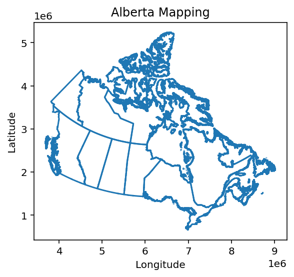

#install geopandas
import sys
# !{sys.executable} -m pip install geopandasWestern Canadian Sedimentary Basin (WCSB) Mapping using Geopandas
python
pandas
Geopandas
data analysis
data visualization
Disclaimer
This blog post is for educational purposes only. Any commercial use of the information provided in this blog post is prohibited. For more information about the AER copyright and permission to reproduce, please visit AER Copyright and Disclaimer. The author is not responsible for any damage or loss caused by the use of the information provided in this blog post.
Introduction
Alberta Energy Regulator (AER) lists the monthly injection and production data for all in-situ oilsands projects in Alberta on its website Alberta Energy Regulator. The data is available in several spreadsheets and can be downloaded from ST53: Alberta In Situ Oil Sands Production Summary. The annual data are reported in separate files in .xls format. Each file has 6 different sheets with information about bitumen, water, steam, wells, SOR, and WSR.
In the previous post Downloading Alberta Oilsands Monthly Production Data using Python, I have shown how to download the data using python. In this post we use the downloaded data for data analysis and visualization. The entire source code can be downloaded by clicking on </>Code next to the blog title.
Loading the Data
All files are stored on a local directory. We use the glob module to list all XLS files in the directory and then use pandas to read the data into a DataFrame. The xlrd module is used as an engine in pandas to read the XLS files. The matplotlib module is used to create the plots. The seaborn module is used to create the plots. The numpy module is used to perform mathematical operations on the data. The warnings module is used to suppress the warnings. The os module is used to save the plots in the current directory.
import os
import glob
import pandas as pd
import geopandas as gpd
import matplotlib.pyplot as plt
import seaborn as sns
import numpy as np
import warnings
warnings.filterwarnings('ignore')The glob module is used to list all XLS files in the directory.
shapefiles = glob.glob('OSProjects2015.gdb/')
shapefiles['OSProjects2015.gdb/']Reading the all the .shp files using geopandas.
gdf = pd.concat(
[gpd.read_file(shp) for shp in shapefiles]).pipe(gpd.GeoDataFrame)# show columns
gdf.columnsIndex(['OSP_NO', 'Operator_Name', 'Project_Name', 'Industry_Type',
'Project_Status', 'Year', 'OS_Area', 'Shape_Length', 'Shape_Area',
'geometry'],
dtype='object')head of the data
gdf.head()| OSP_NO | Operator_Name | Project_Name | Industry_Type | Project_Status | Year | OS_Area | Shape_Length | Shape_Area | geometry | |
|---|---|---|---|---|---|---|---|---|---|---|
| 0 | 1 | Imperial Oil Resources | Cold Lake Operations | 02 | 01 | 2015 | CL | 193203.948339 | 6.881845e+08 | MULTIPOLYGON (((801641.764 6051679.134, 801580... |
| 1 | 3 | Shell Canada Limited | Jackpine Mine | 01 | 01 | 2015 | ATHA | 47371.700342 | 7.672034e+07 | MULTIPOLYGON (((724976.295 6352079.157, 725042... |
| 2 | 4 | Connacher Oil and Gas Limited | Great Divide | 02 | 01 | 2015 | ATHA | 78260.017147 | 1.289022e+08 | MULTIPOLYGON (((695353.230 6217610.084, 695132... |
| 3 | 7 | Canadian Natural Resources Limited (CNRL) | Horizon Mine | 01 | 01 | 2015 | ATHA | 81197.290618 | 2.887134e+08 | MULTIPOLYGON (((702953.989 6370378.694, 702949... |
| 4 | 9 | MEG Energy Corp. | Christina Lake Regional Project | 02 | 01 | 2015 | ATHA | 94158.628161 | 1.899070e+08 | MULTIPOLYGON (((767062.950 6169585.372, 767060... |
show the geometry type of the data
gdf.geom_type.unique()array(['MultiPolygon'], dtype=object)plot the data using geopandas
# plot gdf and add color based on 'OS_Area' column
gdf.plot()
#add additional info to plot
plt.title('Western Canadian Sedimentary Basin (WCSB) Mapping')
plt.xlabel('Longitude')
plt.ylabel('Latitude')
plt.show()
Oilsands land coverage
# shapefiles = glob.glob('OilSandsLandCover2020.gdb/')
shapefiles = glob.glob('Oil_Sands_Industrial_Features_2020/OilSandsSimplifiedLandCover.gdb/')
shapefiles['Oil_Sands_Industrial_Features_2020/OilSandsSimplifiedLandCover.gdb/']Reading the all the .shp files using geopandas.
gdf = pd.concat([gpd.read_file(shp) for shp in shapefiles]).pipe(gpd.GeoDataFrame)# show columns
gdf.columnsIndex(['LCU_ID', 'OSP_NO', 'OSP_NAME', 'PROJECT_NAME', 'EPEA_APPROVAL',
'WA_APPROVAL', 'INDUSTRY_TYPE', 'PROJECT_STATUS', 'RPT_NAME',
'LANDCOVER', 'SUBMISSION_TYPE', 'PDF_NAME', 'MAP_NAME', 'GEOTIFF_NAME',
'SOURCE', 'YEAR', 'YEAR_SUBMISSION', 'RMSE', 'PERIMETER', 'HECTARES',
'AREA', 'LANDCOVER_2', 'Shape_Length', 'Shape_Area', 'geometry'],
dtype='object')head of the data
gdf.head()| LCU_ID | OSP_NO | OSP_NAME | PROJECT_NAME | EPEA_APPROVAL | WA_APPROVAL | INDUSTRY_TYPE | PROJECT_STATUS | RPT_NAME | LANDCOVER | ... | YEAR | YEAR_SUBMISSION | RMSE | PERIMETER | HECTARES | AREA | LANDCOVER_2 | Shape_Length | Shape_Area | geometry | |
|---|---|---|---|---|---|---|---|---|---|---|---|---|---|---|---|---|---|---|---|---|---|
| 0 | 59_12020 | 59 | Statoil Canada | Corner | NaN | NaN | 02 | 03 | Natural | 01 | ... | 2016 | 2017 | NaN | 84369.572314 | 17141.012867 | 1.714101e+08 | Natural | 84369.572314 | 1.714101e+08 | MULTIPOLYGON (((731224.572 6216173.992, 731312... |
| 1 | 38_22020 | 38 | Statoil Canada | Leismer | NaN | NaN | 02 | 01 | Natural | 01 | ... | 2016 | 2017 | NaN | 9722.073266 | 523.240360 | 5.232404e+06 | Natural | 9722.073266 | 5.232404e+06 | MULTIPOLYGON (((729025.743 6178762.620, 729798... |
| 2 | 38_32020 | 38 | Statoil Canada | Leismer | NaN | NaN | 02 | 01 | Natural | 01 | ... | 2016 | 2017 | NaN | 261.242505 | 0.226023 | 2.260230e+03 | Natural | 261.242505 | 2.260230e+03 | MULTIPOLYGON (((720998.230 6184621.870, 720998... |
| 3 | 38_42020 | 38 | Statoil Canada | Leismer | NaN | NaN | 02 | 01 | Natural | 01 | ... | 2016 | 2017 | NaN | 539.848341 | 1.798870 | 1.798870e+04 | Natural | 539.848341 | 1.798870e+04 | MULTIPOLYGON (((722168.492 6188978.678, 722048... |
| 4 | 38_52020 | 38 | Statoil Canada | Leismer | NaN | NaN | 02 | 01 | Natural | 01 | ... | 2016 | 2017 | NaN | 148000.146309 | 32472.938111 | 3.247294e+08 | Natural | 148000.146309 | 3.247294e+08 | MULTIPOLYGON (((728940.016 6180389.384, 728769... |
5 rows × 25 columns
show the geometry type of the data
gdf.geom_type.unique()array(['MultiPolygon'], dtype=object)gdf.OSP_NAME.unique()array(['Statoil Canada', 'Cenovus FCCL Ltd.',
'Canadian Natural Resources Limited',
'Canadian Natural Upgrading Limited',
'ConocoPhillips Canada Resouces Corp.', 'Husky Energy Inc.',
'Imperial Oil Resources',
'China National Offshore Oil Corporation (CNOOC)',
'Shell Canada Limited', 'Suncor Energy Inc.',
'Suncor Energy Operating Inc.', 'Syncrude'], dtype=object)plot the data using geopandas
# add color based on 'OSP_NAME' column, with legends outside of the box
gdf.plot(column='OSP_NAME')
#add additional info to plot
plt.title('Alberta Mapping')
plt.xlabel('Longitude')
plt.ylabel('Latitude')
plt.show()
Read Layer files
# shapefiles = glob.glob('OilSandsLandCover2020.gdb/')
shapefiles = glob.glob('Alberta_Census_Boundaries_SHP/Data/')
shapefiles['Alberta_Census_Boundaries_SHP/Data/']Reading the all the .shp files using geopandas.
gdf = pd.concat([
gpd.read_file(shp)
for shp in shapefiles
]).pipe(gpd.GeoDataFrame)
gdf.crs<Derived Projected CRS: EPSG:3400>
Name: NAD83 / Alberta 10-TM (Forest)
Axis Info [cartesian]:
- E[east]: Easting (metre)
- N[north]: Northing (metre)
Area of Use:
- name: Canada - Alberta.
- bounds: (-120.0, 48.99, -109.98, 60.0)
Coordinate Operation:
- name: Alberta 10-degree TM (Forest)
- method: Transverse Mercator
Datum: North American Datum 1983
- Ellipsoid: GRS 1980
- Prime Meridian: Greenwich# show columns
gdf.columnsIndex(['CDUID', 'DGUID', 'CDNAME', 'CDTYPE', 'LANDAREA', 'PRUID', 'Shape_Leng',
'Shape_Area', 'geometry'],
dtype='object')head of the data
gdf.head()| CDUID | DGUID | CDNAME | CDTYPE | LANDAREA | PRUID | Shape_Leng | Shape_Area | geometry | |
|---|---|---|---|---|---|---|---|---|---|
| 0 | 4801 | 2021A00034801 | Division No. 1 | CDR | 20277.5235 | 48 | 731858.147928 | 2.106613e+10 | POLYGON ((769392.116 5621501.264, 769424.875 5... |
| 1 | 4802 | 2021A00034802 | Division No. 2 | CDR | 17456.3337 | 48 | 968124.543163 | 1.816766e+10 | POLYGON ((703274.537 5666369.084, 703265.420 5... |
| 2 | 4803 | 2021A00034803 | Division No. 3 | CDR | 13725.0719 | 48 | 720459.744611 | 1.401314e+10 | POLYGON ((565857.674 5580957.780, 569640.425 5... |
| 3 | 4804 | 2021A00034804 | Division No. 4 | CDR | 21055.2056 | 48 | 744593.529088 | 2.225920e+10 | POLYGON ((772971.984 5791887.223, 772996.565 5... |
| 4 | 4805 | 2021A00034805 | Division No. 5 | CDR | 16651.2279 | 48 | 848683.053145 | 1.711136e+10 | POLYGON ((604596.201 5754808.983, 604596.219 5... |
plot the data using geopandas
gdf.boundary.plot()
#add additional info to plot
plt.title('Alberta Mapping')
plt.xlabel('Longitude')
plt.ylabel('Latitude')
plt.show()
Read Canada
# shapefiles = glob.glob('OilSandsLandCover2020.gdb/')
shapefiles = glob.glob('lpr_000b21f_e/lpr_000b21f_e.gdb/')
shapefiles['lpr_000b21f_e/lpr_000b21f_e.gdb/']Reading the all the .shp files using geopandas.
gdf = pd.concat([
gpd.read_file(shp)
for shp in shapefiles
]).pipe(gpd.GeoDataFrame)
gdf.crs<Derived Projected CRS: PROJCS["NAD83_Statistics_Canada_Lambert",GEOGCS["N ...>
Name: NAD83_Statistics_Canada_Lambert
Axis Info [cartesian]:
- [east]: Easting (metre)
- [north]: Northing (metre)
Area of Use:
- undefined
Coordinate Operation:
- name: unnamed
- method: Lambert Conic Conformal (2SP)
Datum: North American Datum 1983
- Ellipsoid: Geodetic_Reference_System_of_1980
- Prime Meridian: Greenwich# show columns
gdf.columnsIndex(['PRUID', 'DGUID', 'PRNAME', 'PRENAME', 'PRFNAME', 'PREABBR', 'PRFABBR',
'LANDAREA', 'geometry'],
dtype='object')head of the data
gdf.head()| PRUID | DGUID | PRNAME | PRENAME | PRFNAME | PREABBR | PRFABBR | LANDAREA | geometry | |
|---|---|---|---|---|---|---|---|---|---|
| 0 | 10 | 2021A000210 | Newfoundland and Labrador / Terre-Neuve-et-Lab... | Newfoundland and Labrador | Terre-Neuve-et-Labrador | N.L. | T.-N.-L. | 3.581704e+05 | MULTIPOLYGON (((8841194.729 2213093.663, 88411... |
| 1 | 11 | 2021A000211 | Prince Edward Island / Île-du-Prince-Édouard | Prince Edward Island | Île-du-Prince-Édouard | P.E.I. | Î.-P.-É. | 5.681179e+03 | MULTIPOLYGON (((8374335.443 1629502.597, 83743... |
| 2 | 12 | 2021A000212 | Nova Scotia / Nouvelle-Écosse | Nova Scotia | Nouvelle-Écosse | N.S. | N.-É. | 5.282471e+04 | MULTIPOLYGON (((8310463.217 1250722.263, 83104... |
| 3 | 13 | 2021A000213 | New Brunswick / Nouveau-Brunswick | New Brunswick | Nouveau-Brunswick | N.B. | N.-B. | 7.124850e+04 | MULTIPOLYGON (((7964100.720 1576822.289, 79641... |
| 4 | 24 | 2021A000224 | Quebec / Québec | Quebec | Québec | Que. | Qc | 1.298600e+06 | MULTIPOLYGON (((6948393.211 2760814.626, 69483... |
plot the data using geopandas
gdf.boundary.plot()
#add additional info to plot
plt.title('Alberta Mapping')
plt.xlabel('Longitude')
plt.ylabel('Latitude')
plt.show()